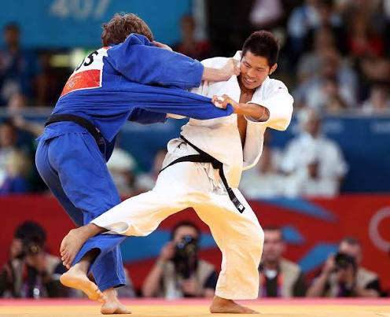
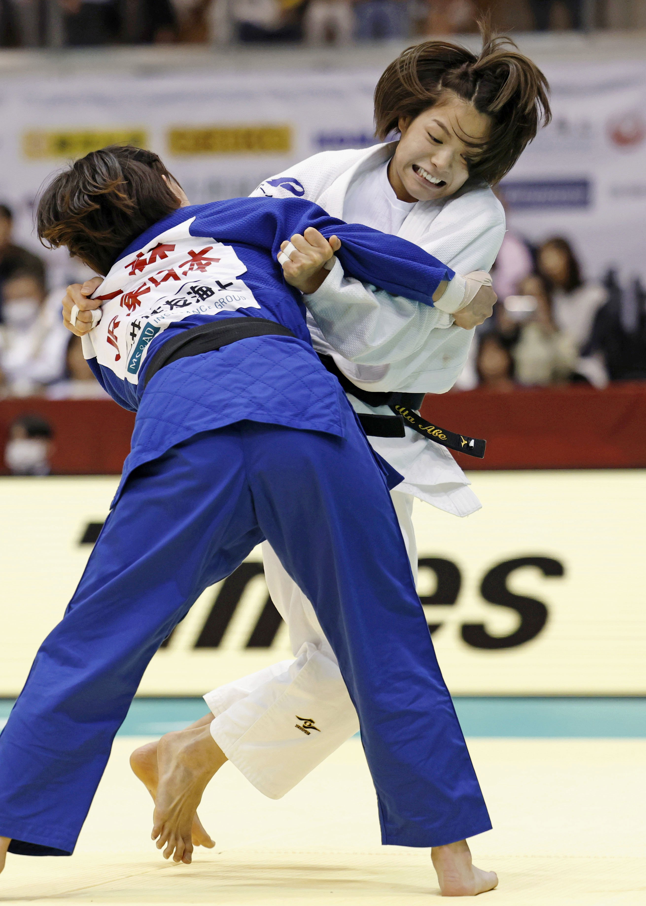

Welcome to the World of Judo
Judo is a modern Japanese martial art, combat sport, and Olympic discipline created in 1882 by Jigoro Kano.

Core Pillars of Practice
Judo emphasizes using an opponent's force against them through precise timing and leverage rather than brute force.
Key Principles
- Seiryoku Zenyo (Maximum Efficiency, Minimum Effort)
- Jita Kyoei (Mutual Welfare and Benefit)
- Reigi (Respect and Etiquette)
Basic Steps for Beginners
- Master Ukemi (breakfalls) to prevent injury.
- Learn fundamental posture and movement (Shisei & Shintai).
- Practice off-balancing the opponent (Kuzushi).
- Execute basic throwing techniques (Nage-waza).
